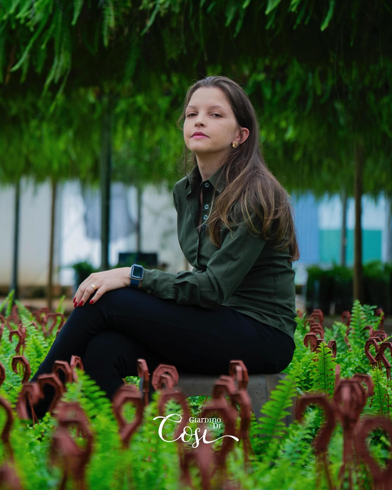
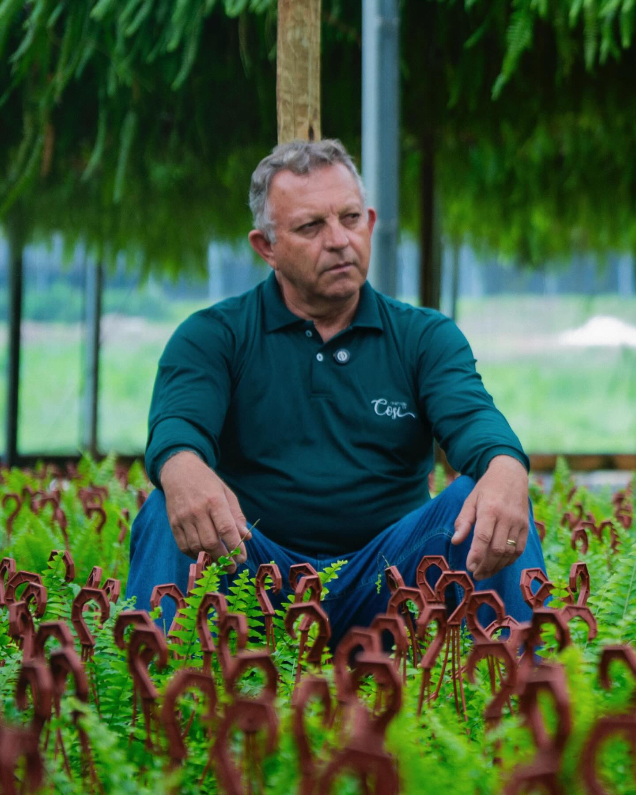
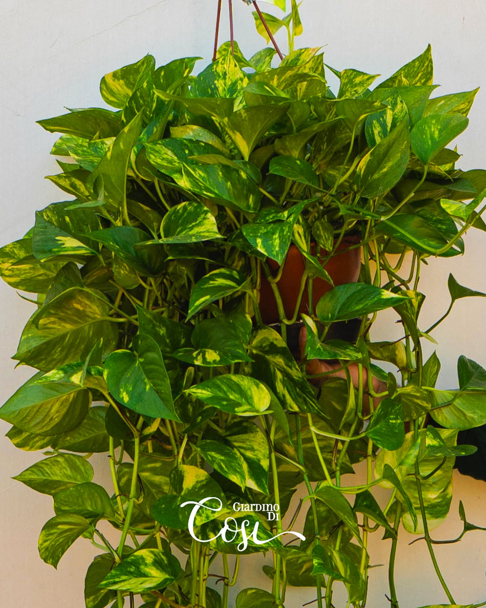
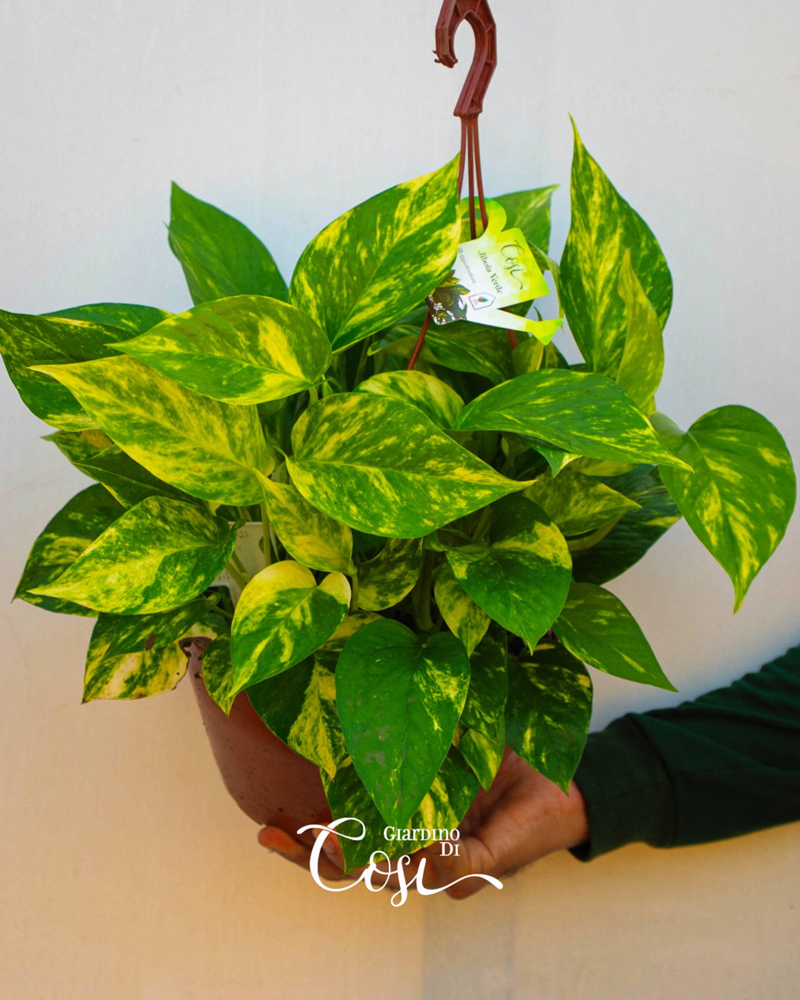
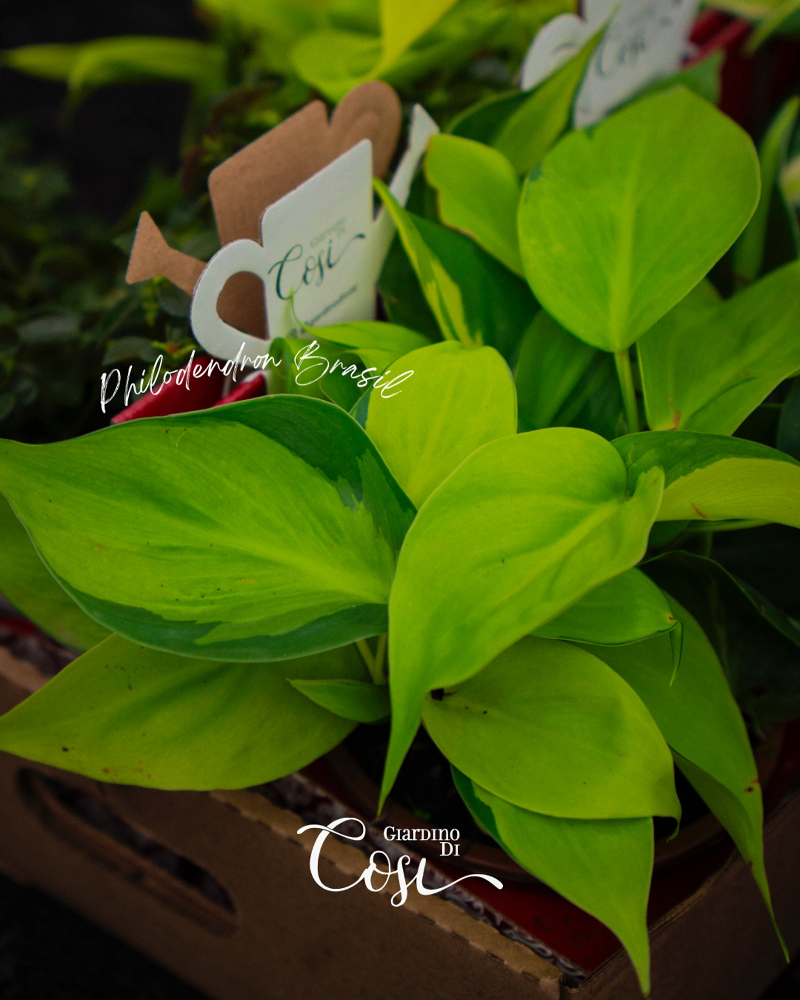
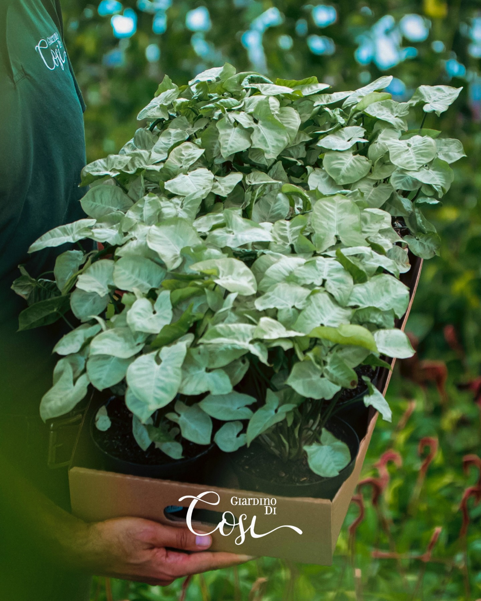
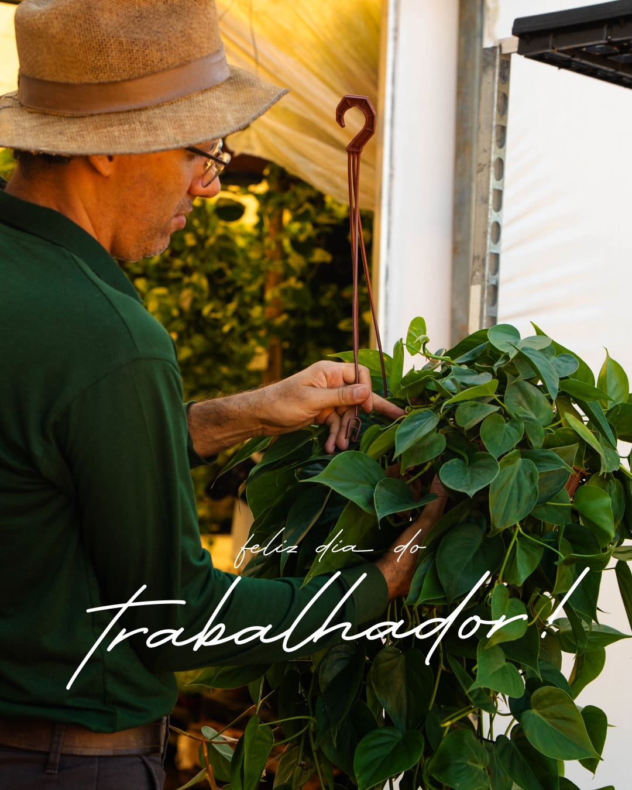
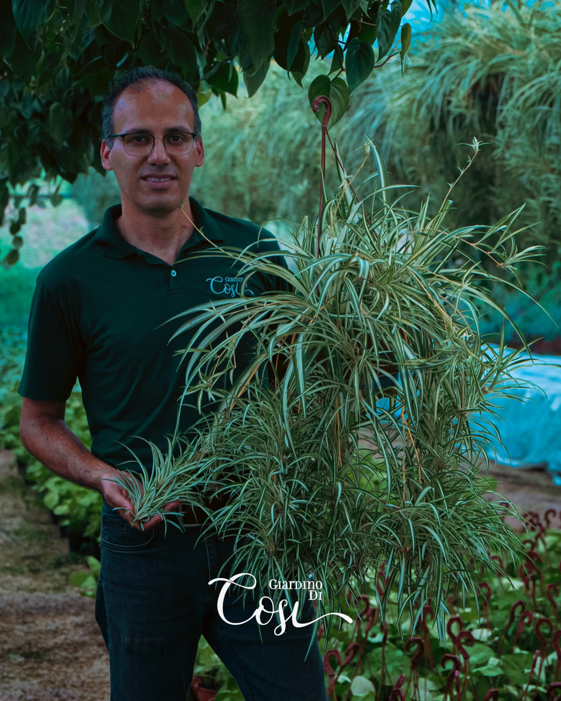

Antes de cada folha crescer...
existe uma história sendo plantada.

"Família, trabalho e amor pelo que se cultiva todos os dias."
O Giardino Di Cosi é uma história de família. Décio, o fundador, começou cultivando plantas com as mãos e a alma — e hoje vê sua filha Andréia seguir o mesmo caminho, com a mesma paixão e dedicação de sempre.
Situados em Holambra, SP — a capital brasileira das flores — somos especializados em plantas pendentes e verdes: jiboias, philodendrons e samambaias cultivadas com atenção a cada detalhe, do substrato à poda.
Para nós, uma planta não é um produto. É um ser vivo que carrega a história de quem a cuidou, regou e acompanhou crescer.
Holambra, SP — A cidade com maior produção de flores e plantas ornamentais do Brasil, fundada por colonos holandeses e reconhecida mundialmente pela excelência florícola.

Clássica e resiliente. Folhas lustrosas e crescimento exuberante que se adapta a qualquer canto — da varanda ao escritório.

A versão dourada que ilumina qualquer ambiente com seu verde-lima inconfundível.

Sofisticação e marcância. Diversas variedades, incluindo o Micans de folhas aveludadas.

Símbolo de frescor. Folhagem densa e cascateante que transforma varandas em oásis.


Escolhemos mudas saudáveis de espécies com alto potencial decorativo. Cada variedade é avaliada pela beleza, resistência e adaptação ao clima de Holambra.
Irrigação, adubação e controle de luz todos os dias. Cada planta é acompanhada individualmente até atingir o ponto ideal de beleza e saúde.
A poda é uma arte. Conduzimos cada planta para que chegue ao mercado com forma impecável, volume equilibrado e aparência exuberante.
Nossas plantas chegam a lojas e viveiros de todo o Brasil através do Veiling Market de Holambra — garantindo rastreabilidade, qualidade e frescor.
Duas vezes ao ano, o Veiling Market de Holambra reúne os maiores produtores de plantas do Brasil em um evento único. É ali que nossas plantas deixam a estufa e chegam às mãos de lojistas, viveiristas e varejistas de todo o país.
Acompanhar no InstagramUm mercado cooperativo de flores e plantas de Holambra que funciona como leilão organizado — conectando produtores rurais a compradores de todo o Brasil com transparência e qualidade.
Durante o evento, compradores podem adquirir nossas plantas em lotes de alta qualidade. Acompanhe nossas redes para saber quando acontece a próxima edição.
O evento acontece 2 vezes por ano em Holambra, SP. Siga o Instagram @giardinodicosi para não perder os avisos e novidades de cada edição.
Cada edição do Veiling é uma celebração da produção artesanal brasileira
Compartilhamos semanalmente no Instagram dicas de cuidado para jiboias, philodendrons e samambaias. Aqui vão as essenciais para você começar com o pé direito.
Jiboias e philodendrons adoram luz indireta. Evite sol direto forte — prefira janelas claras, mas sem insolação direta nas folhas.
Regue apenas quando o substrato estiver levemente seco. Excesso de água provoca raízes podres — o maior inimigo das pendentes.
Samambaias precisam de umidade. Borrifar as folhas nos dias secos ou usar pedrinhas com água no pratinho faz toda a diferença.
Na primavera e verão, use adubo líquido NPK a cada 15-30 dias. Deixa as folhas vibrantes e estimula o crescimento acelerado.
Retire folhas amarelas com tesoura limpa. A poda estimula novos brotos e mantém a forma bonita e o volume equilibrado da planta.
Publicamos Dicas Rápidas toda semana no Instagram com tudo sobre jiboias, philodendrons e samambaias. Segue lá! @giardinodicosi
10,3 mil seguidores · 293 posts
O dia a dia da estufa, bastidores do cultivo, dicas rápidas e a história de uma família apaixonada por plantas.